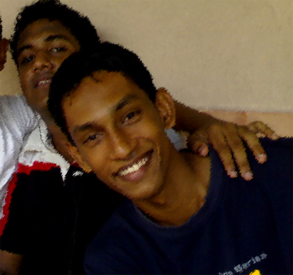

|  | |
| The original picture after cropped. | I
used the rectangular marquee tool to select a small p[ortion of my
original image and then cropped the selection by cutting the
selection. Then i used the option called the levels,(image>adjusments>Levels) to edit the white balance of the image. Last i used the filter called the "Sprayed Strokes" to manipulate the image. |
| The link for the The original image |